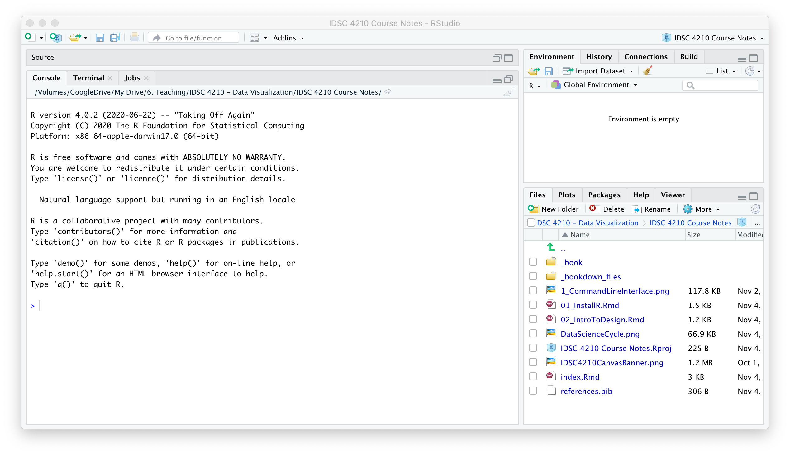
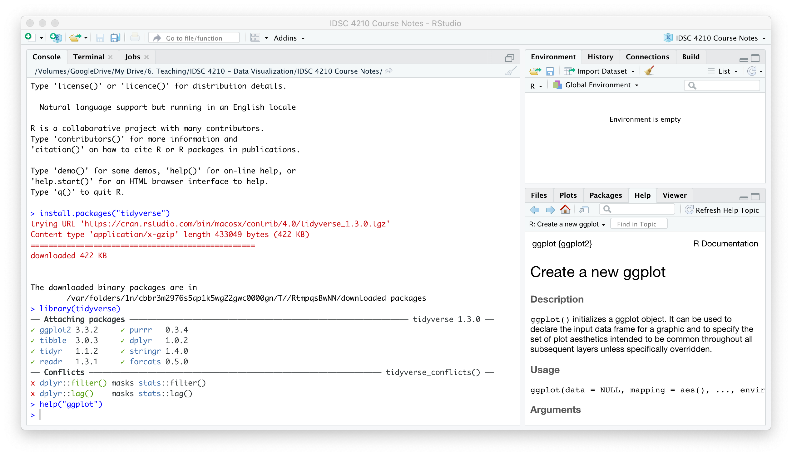
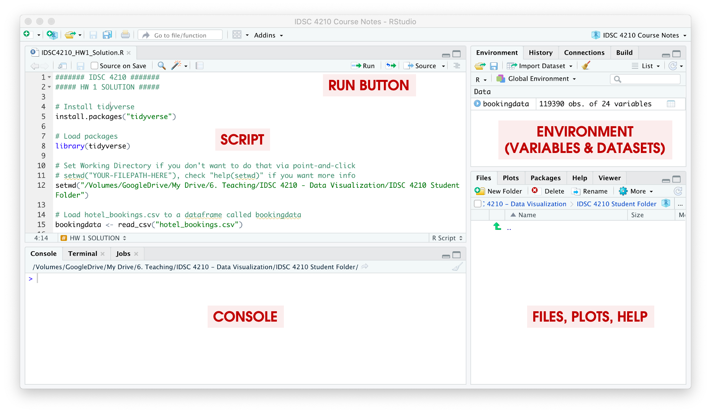
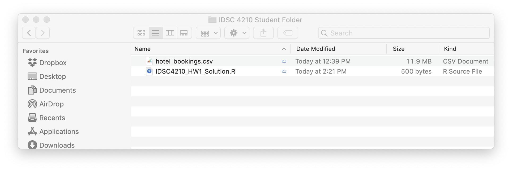
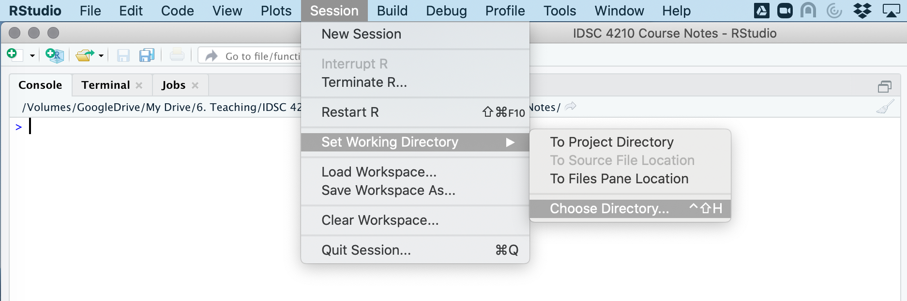
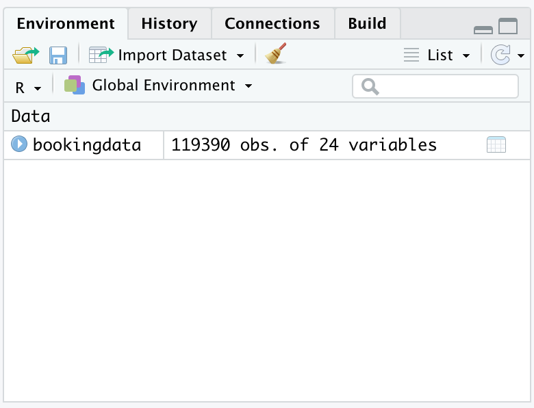
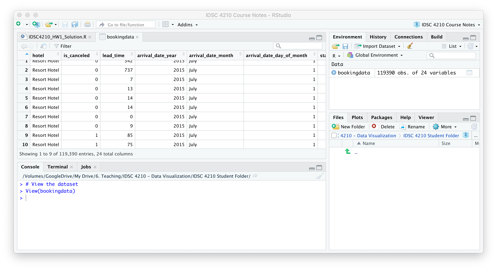

2 Installing R and Loading Datasets

2.1 Installing R, RStudio, and Tidyverse
2.1.1 Step 1: Install R
In the first half of the course, we will use the statistical programming language R to construct our visualizations and gain familiarity manipulating data. R is very powerful, free open-source software.
Download the latest version of R (4.0.3 or later) from R-Project.org.
R is capable of handling massive datasets, querying databases in SQL, creating beautiful visualizations, running complex statistical analysis, and building state-of-the-art machine learning models. You can also easily switch between R and other software packages (like Python) in the same script.
2.1.2 Step 2: Install RStudio
You can interact with R via the command line, but the RStudio IDE (Integrated Developer Environment) offers a much better user experience. Download the latest version of RStudio from RStudio.com.
Once you have R and RStudio installed, open RStudio and it should look something like the figure below. We will only interact with R through RStudio in this course.There are excellent resources online if you run into trouble; for example, search YouTube for “RStudio Installation.”
2.1.3 Step 2: Install the tidyverse (and ggPlot Visualization Package)
We will use the ggplot package developed by Hadley Wickham. We will also use a number of other commands for “data wrangling” (manipulating and working with datasets). Conveniently, these packages are all offered together in a “meta-package” called the tidyverse, which refers to a group of packages that handle data in a “tidy” way.
Type install.packages("tidyverse") in the Console in RStudio to install the tidyverse. RStudio will download the package from CRAN and install it for you.

The tidyverse packages are now installed on your computer (which you only have to do once) but you will have to load them every time you open RStudio.
Load the tidyverse with the command library(tidyverse).
library(tidyverse)Then, check that it’s working by checking the help file for one of the tidyverse packages like ggplot. Type help("ggplot") and the help screen should pop up on the lower right hand tab. You can also search for help directly in this window.
2.2 Load the Dataset for This Course
We will primarily be using an excerpt of a set of real data on hotel stays from two hotels.[@antonio2019]
The dataset is available as a “delimited text file” of “comma-separated values” or .csv which your computer will probably want to open into Microsoft Excel or Apple Numbers. You can take a look at it, but some datasets in the real world are far too large to open in Excel. R can handle them though!
For the assignments in this class (and in general) it is best to write all your code as a script file so that you can save and edit your work (rather than just typing it directly into the console). The script is typed in the window above the Console. Use the Run Button to run specific lines or the entire script.

2.2.1 Download the Dataset
First, download the dataset. It’s a best practice to save everything for a project inside the same folder. Create a folder for the class, and keep everything there.

2.2.2 Set Working Directory
Next, set your “Working Directory” to that folder you set up and where you’ve saved the dataset to. The working directory is where RStudio will look for files and save exports. You can set your working directory by clicking on the “Session” tab on the menu bar.Alternatively, you can use the command setwd() to manually tell RStudio where to look. I usually include the one line of code to set my working directory in every R script that I write.
# Set Working Directory
setwd("/Volumes/GoogleDrive/My Drive/6. Teaching/IDSC 4210 - Data Visualization/IDSC 4210 Course Notes")2.2.3 Load Dataset into R
We’re going to use read_csv() command from the readr package which is included in the tidyverse. We want to save the dataset in R to a dataframe called bookingdata.
# Load tidyverse (Since we need readr and ggplot2)
library(tidyverse)
# Load hotel_bookings.csv to a dataframe called bookingdata
bookingdata <- read_csv("hotel_bookings.csv")## Parsed with column specification:
## cols(
## .default = col_double(),
## hotel = col_character(),
## arrival_date_month = col_character(),
## meal = col_character(),
## country = col_character(),
## market_segment = col_character(),
## reserved_room_type = col_character(),
## assigned_room_type = col_character(),
## deposit_type = col_character(),
## agent = col_character(),
## reservation_status = col_character()
## )## See spec(...) for full column specifications.R tells us that it loaded all of the columns with some “specifications,” ie, what type of data is in each column.

And if we look in the top right hand panel, we now have a dataframe called bookingdata with 119,390 observations of 24 variables.
2.2.4 Examine the Booking Dataset
Whenever you get a new dataset or pull a SQL query, you should always look at the data to make sure it’s what you’re expecting.
In R, we can either click on the object over in the Environment pane, or you can use the command View(bookingdata)

We should refer to the Data Dictionary File, which is also provided on Canvas, to know what each variable is. In this dataset, some key variables are:
hotel: Hotel Location, either “City Hotel” or “Resort Hotel”
is_canceled: A 0/1 indicator for whether the booking was canceled or not
arrival_date_year: The year of the planned arrival date
adr: The “Average Daily Rate” or average price per day for the guest’s stay
Always make sure you know how to describe your dataset, including what each row represents and what data is included. Our hotel dataset can be described like this:
“This dataset has information from about 100K hotel bookings. Each row represents one booking at a hotel, and includes information on the stay (date, price, hotel) and the guest (number of adults, country of origin).”
2.2.5 Observations, Variables and Values
There are three key terms that have specific meanings when talking about data analysis.
An observation is a set of measurements usually made at the same time. For a “tidy” or “long” dataset, each observation is on its own row. You may hear observations called rows or records; these terms are often interchangeable (but not always…it depends on the data structure!).
A dimension or variable is something that you can measure (e.g. height, income, destination, win/loss)
A value is the result or state of a measurement for a variable (e.g. height = 2 meters, win/loss = WIN)
Always make sure you know what the observations are in your datasets, where data from variables comes from (or how it’s calculated), and possible values for every variable.
2.2.6 Initial Exploration
Next, Let’s look at our data in more detail. The summary command does that for us nicely, helping us learn what we’re dealing with. (The describe command in the psych package is a little nicer though.)
summary(bookingdata)Let’s get a sense for the data. How many bookings were at the City Hotel and how many at the Resort Hotel? (To hide the true identity of the hotel names and be more descriptive than Hotel 1 and Hotel 2, they gave use “City” and “Resort”). We can use the command table to easily break it down a bit.
# Tabulate by Hotel Location
table(bookingdata$hotel)##
## City Hotel Resort Hotel
## 79330 40060Notice how we use the name of the data object bookingdata followed by a dollar sign and then our variable name, hotel? This is a key point.
We can also create a two-way table. Let’s look at bookings by month and hotel.
# Tabulate by Month and Hotel
table(bookingdata$arrival_date_month, bookingdata$hotel)##
## City Hotel Resort Hotel
## April 7480 3609
## August 8983 4894
## December 4132 2648
## February 4965 3103
## January 3736 2193
## July 8088 4573
## June 7894 3045
## March 6458 3336
## May 8232 3559
## November 4357 2437
## October 7605 3555
## September 7400 3108Do some more exploring on your own. What else do you see? It’s hard to get a sense for this many numbers. Some visualizations would help us!